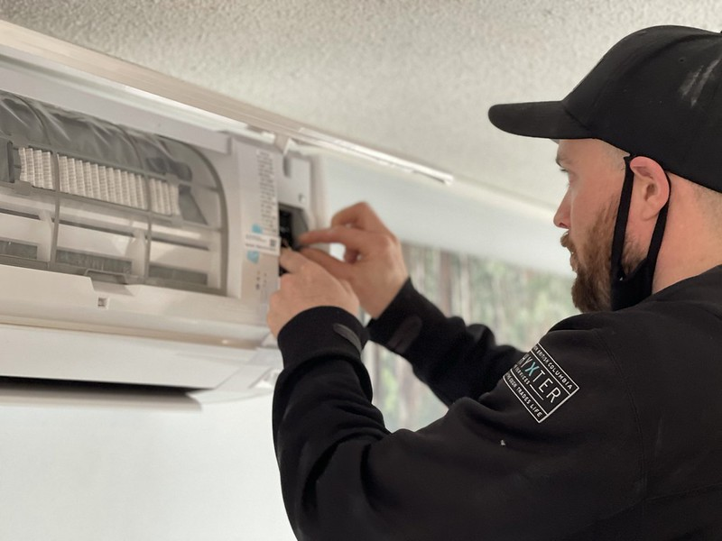
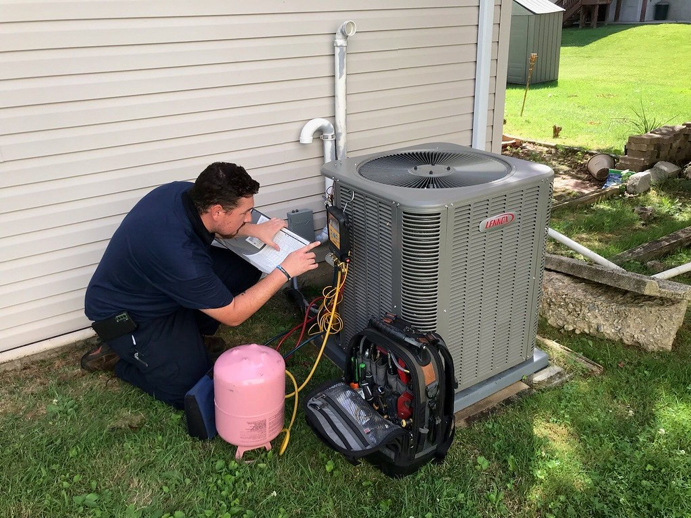
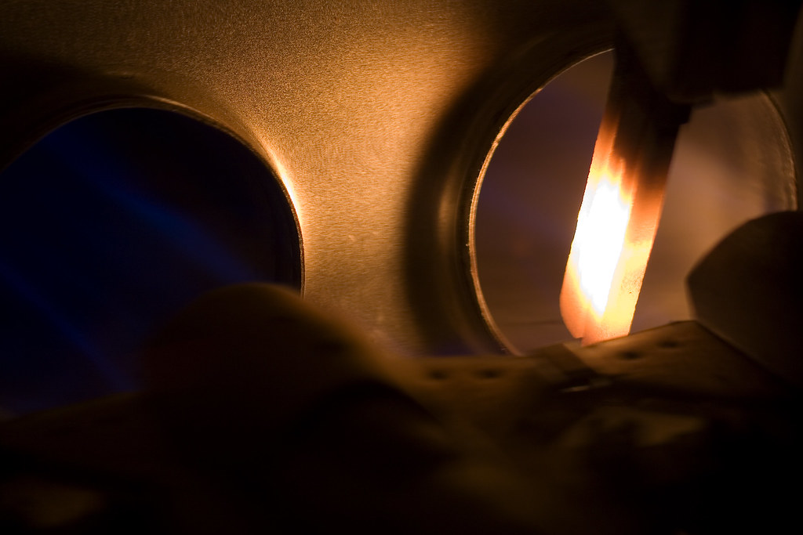
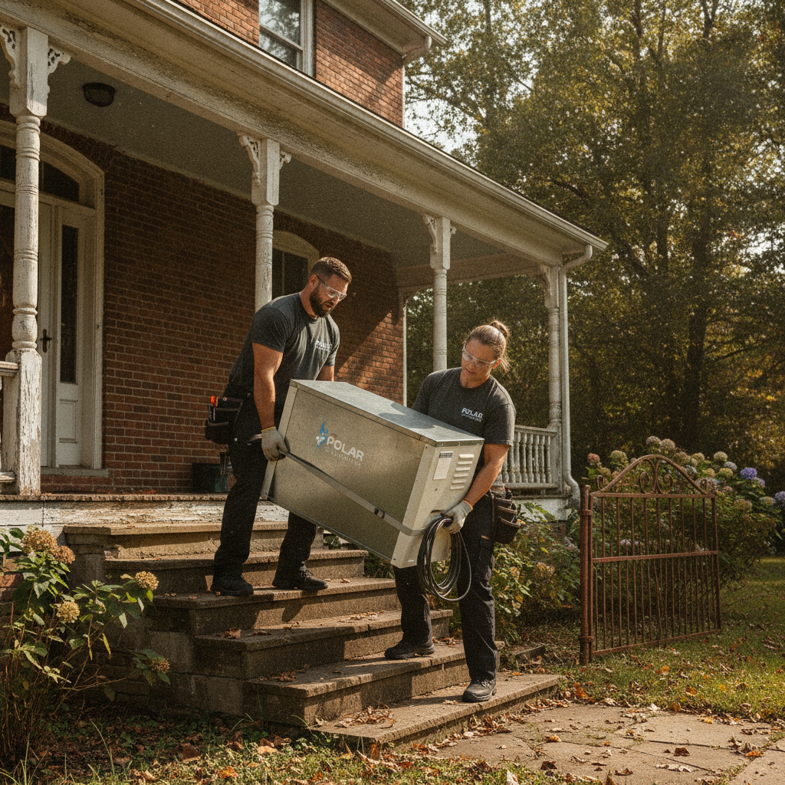
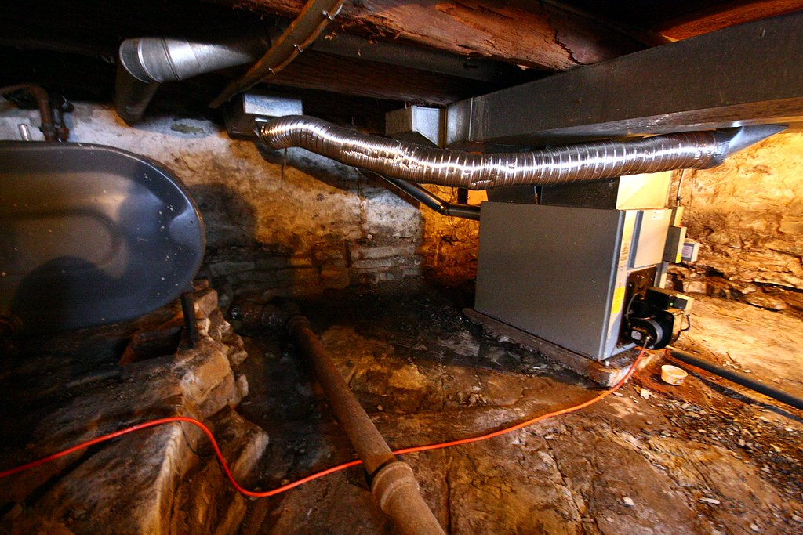
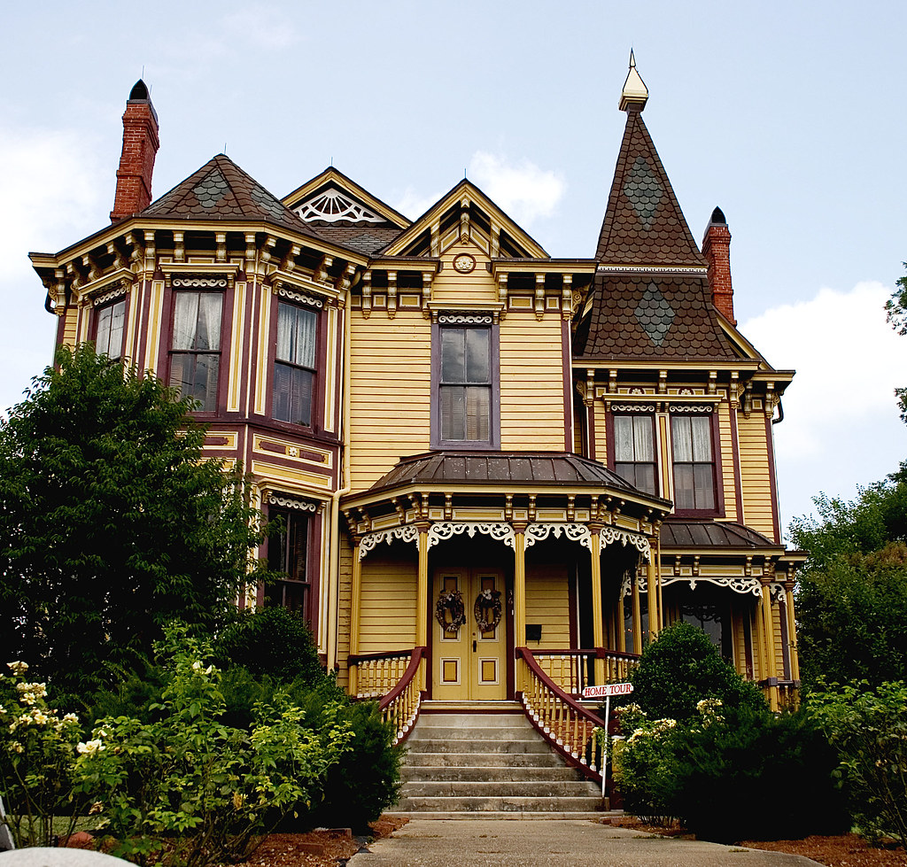

That charming Poconos property that kept you cozy during weekend escapes now faces January's relentless deep freeze—full-time.
Your cabin wasn't built for winter.
When seasonal systems meet full-time demands
Year-round mountain living reveals what weekend visits never could. When you moved from seasonal escapes to permanent residence in Stroudsburg, you discovered that the propane wall heater and baseboard electric units that seemed adequate for occasional use now cycle endlessly, driving utility bills into triple digits while bedrooms stay stubbornly cold. The ductwork cobbled together decades ago serves the main living area but leaves additions and converted spaces struggling.
HVAC equipment installed in vacation homes operates under entirely different assumptions than year-round systems. A cabin used twenty weekends annually might run its heating system 500 hours per season. That same home occupied continuously demands 3,000-plus hours of operation. Components designed for intermittent duty face accelerated wear when pushed into constant service. The propane furnace that lasted fifteen years under weekend use might need replacement after five years of daily operation.
Stroudsburg's elevation amplifies these demands. Homes climbing toward Prospect Street and Route 191 reach 1,800 feet, where winter temperatures average five to eight degrees colder and snow accumulation doubles. A heating system adequate for lower elevations becomes undersized as you climb.
The three-ton heat pump serving a Delaware Water Gap ranch might leave a similar home near Wigwam Park constantly running in auxiliary heat mode—effectively operating as an expensive electric resistance heater rather than an efficient heat pump.
The infiltration reality
Opening and closing doors dozens of times daily, running bathroom exhaust fans, operating clothes dryers, and cooking all create pressure differentials that pull cold air through every unsealed penetration. Cabin-grade weatherization that seemed sufficient for occasional use allows massive air exchange when the building operates as a primary residence. These leakage patterns force heating systems to work exponentially harder. Without addressing the building envelope first, even new high-efficiency equipment will disappoint.
Ductwork that evolved, not designed
Most converted seasonal homes feature ductwork that grew organically over decades rather than following coherent design. The original cabin had a single heating source—often a wood stove or propane heater—with no distribution system. When owners added rooms, they extended whatever duct existed or installed supplemental wall units.
The result is undersized flex duct, rigid sections with multiple sharp bends, returns placed without regard to airflow principles, and registers chosen for construction convenience rather than comfort delivery. Proper duct design begins with load calculations for each room accounting for window area, insulation values, orientation, and ceiling height. Trunk lines must be sized to move airflow volume without excessive velocity that creates noise and pressure drop.
Branch takeoffs need positioning and sizing so each room receives its proportional share of conditioned air. Very few converted cabins approach this standard. A 900-square-foot cabin built in 1968 with a 500-square-foot addition in 1985 and a second-story expansion in 2003 illustrates this pattern. Each addition brought its own heating solution—first extended flex duct, then a ductless mini-split, finally more flex duct pulled through cramped attic space.
Current occupants live with a master bedroom ten degrees colder than the living room, bathroom fans that barely move air, and a furnace that short-cycles because the return is strangled. A comprehensive duct redesign treating the entire home as a unified system is the only path to consistent comfort.

StockHeat pump performance at altitude

StockCapacity degradation
Heat pumps lose heating capacity as outdoor temperature drops. A unit rated for 36,000 BTU at 47°F might deliver only 24,000 BTU at 5°F. Stroudsburg experiences extended periods below 20°F, requiring systems sized to meet load at design temperature of 8°F.
Defrost cycles
As frost accumulates on outdoor coils, the system must periodically reverse to melt buildup. During defrost, no heating occurs. In Stroudsburg's climate with frequent freeze-thaw cycles, defrost can occur every 45-60 minutes during certain conditions.
Elevation refrigerant charge
Altitude affects refrigerant behavior and requires charge adjustments. Systems installed using sea-level specifications underperform at 1,600 feet. Installers unfamiliar with mountain installations often overlook this factor, leaving systems that never achieve rated capacity.
Snow and ice management
Outdoor units positioned without regard to snowfall patterns become buried or blocked by ice dams. Properties regularly see 50-plus inches of seasonal snowfall. Elevated platforms, strategic placement away from roof drainage, and adequate clearance are essential but frequently absent.

StockBackup heating integration
The transition point from heat pump to supplemental heat needs careful programming. Setting it too high wastes the heat pump's capacity; too low allows extended discomfort during cold snaps. Many systems use fixed setpoints rather than outdoor temperature-based staging.

AIMountain microclimate strategy
The bowl-shaped valley topography creates temperature inversions on clear winter nights. Cold air drains from surrounding ridges and pools in low-lying areas. Design temperature varies significantly by elevation and location within Stroudsburg's varied terrain.

StockInsulation challenges in post-and-beam homes
The architectural charm that draws people to Poconos cabins—exposed beams, cathedral ceilings, wall-to-wall windows overlooking wooded lots—creates thermal challenges that often prove more expensive to remedy than anticipated. Post-and-beam construction with decorative exposed framing leaves minimal cavity depth for insulation. Cathedral ceilings frequently have only four to six inches of cavity space between interior finish and roof deck, accommodating perhaps R-19 fiberglass where modern standards call for R-49.
Retrofitting insulation requires careful strategy to preserve architectural character while achieving meaningful performance gains. Blown-in cellulose or foam can fill wall cavities from the exterior, but diagonal bracing and irregular stud spacing complicate the work. Cathedral ceilings may need exterior rigid foam above the roof deck when interior cavity insulation proves insufficient—an expensive proposition that triggers roofing replacement. The pragmatic approach prioritizes air sealing over insulation R-value.
Sealing the band joist, weatherstripping doors, gaskets behind electrical boxes, and spray foam at rim joists can reduce infiltration by 30-40% at modest cost. Addressing the attic plane where accessible provides the highest return—even in cathedral ceiling homes, there are usually flat attic areas above bedrooms or garages where dense-pack cellulose or blown fiberglass can bring R-values to modern standards.
The goal is not perfection but meaningful improvement sufficient to allow right-sized HVAC equipment to maintain comfort without constant operation.
- Band joist sealing: eliminates cold air at the foundation-wall junction
- Window replacement strategy: prioritize south-facing glass for solar gain and thermal performance
- Attic improvements: target flat ceiling planes for highest return on investment
- Door and penetration sealing: reduces air exchange from daily occupancy patterns
- Rim joist foam injection: critical thermal break for basement or crawlspace rim areas
Zoning for complex floor plans
The organic growth patterns typical of converted seasonal homes create floor plans that resist uniform heating. A main living area with open concept, high ceilings, and abundant south-facing glass sits adjacent to small bedrooms with low ceilings and minimal windows. An addition built over a crawlspace shares a heating system with rooms over a full basement.
Guest quarters above a detached garage were plumbed into main house ductwork as an afterthought. Attempting to heat these diverse spaces with a single-zone system produces chronic complaints. Zoning addresses this by creating independently controlled areas with dampers in the ductwork and multiple thermostats. The living area with high solar gain and daytime occupancy operates on one zone.
Bedrooms used primarily at night form a second zone that can run at setback temperatures during the day. The garage apartment or in-law suite becomes a third zone that can be set back when unoccupied. Modern zoning systems use electronically controlled dampers with bypass or variable-speed blowers to maintain proper airflow as zones close. Alternatively, ductless mini-split systems provide zoning through individual air handlers in each room or area.
A multi-zone system might have an outdoor condenser serving four to six indoor units—one in the main living area, one in each bedroom, one in a bonus room. Each space maintains independent temperature control, and unoccupied areas can be set back without compromise. The lack of ductwork eliminates the distribution losses that can waste 20-30% of heating energy in poorly sealed duct systems.
For converted cabins with complex layouts and challenging spaces for ductwork, the mini-split approach often proves simpler and more effective than retrofitting a ducted system.
- 6,200 heating degree days—Monroe County standard, not Philadelphia norms
- Weekend-to-occupied transition creates 30-40% load increase
- Elevation adds 8-10% to heating load per 1,000 feet above baseline
- Infiltration in converted cabins often 2-3x higher than code-built homes
- Lake-effect moisture from nearby reservoirs adds humidity load
Common questions about year-round HVAC
Can I just add a bigger furnace to solve comfort problems?
Oversizing equipment rarely solves comfort issues and often makes them worse. A furnace too large for actual heat loss will short-cycle, running in brief bursts that never reach steady-state operation. This creates temperature swings, uneven heating, and accelerated wear. The proper sequence is performing room-by-room load calculation, addressing envelope deficiencies, evaluating ductwork, then selecting equipment sized for actual load. In many cases, a smaller furnace paired with improved insulation and air sealing outperforms a larger unit.
How long should it take to recover from overnight setback?
A properly sized system should recover from four-degree overnight setback in 45-90 minutes. If recovery takes three-plus hours or never completes, the issue is typically undersized equipment, inadequate air delivery to specific rooms, or thermostat location that satisfies before the rest of the home reaches temperature. Homes with significant thermal mass—stone fireplaces, concrete floors, masonry walls—take longer because you're heating the structure as well as the air.
Smaller setbacks or eliminating setback altogether often proves more comfortable and may not cost significantly more in energy.
Is it worth insulating my attic if I have cathedral ceilings?
Even homes dominated by cathedral ceilings usually have some flat attic space—over garages, above closets or bathrooms, over bedroom wings. These areas often represent 20-30% of total ceiling plane and are typically the most under-insulated. Bringing flat attic areas to R-49 or R-60 with blown insulation is cost-effective and reduces heating system load meaningfully.
For cathedral sections, focus first on air sealing at top plates and penetrations, which provides better return than trying to add insulation depth within limited cavity space.
Why does my utility bill spike in January even with the same settings?
Winter utility spikes reflect the convergence of colder design temperatures, longer heating runtime, and inefficient system operation patterns common in oversized or misfired equipment. When outdoor temperature drops from 35°F to 5°F, your heating load nearly doubles. If your system isn't sized for actual load or ductwork restricts airflow to certain rooms, the furnace runs in extended cycles rather than reaching efficient steady state.
A diagnostic assessment pinpoints whether the issue is equipment, ductwork, envelope, or control strategy—often it's a combination.
Book your whole-home assessment
If your furnace keeps short-cycling during a January cold snap or certain rooms never quite reach temperature, a diagnostic visit pinpoints why before anything fails completely. We evaluate your building envelope, measure airflow through existing ductwork, assess equipment sizing against actual loads, and identify which improvements will deliver the comfort you expected when you made the move permanent.
Our Work in Your Neighborhood

StockAlso serving nearby: East Stroudsburg
Photos: "Ductless Mini Split Heat Pump Installation" by Vernon Air Con, BY-SA, via Openverse · "Basement" by Martin Cathrae, BY-SA, via Openverse